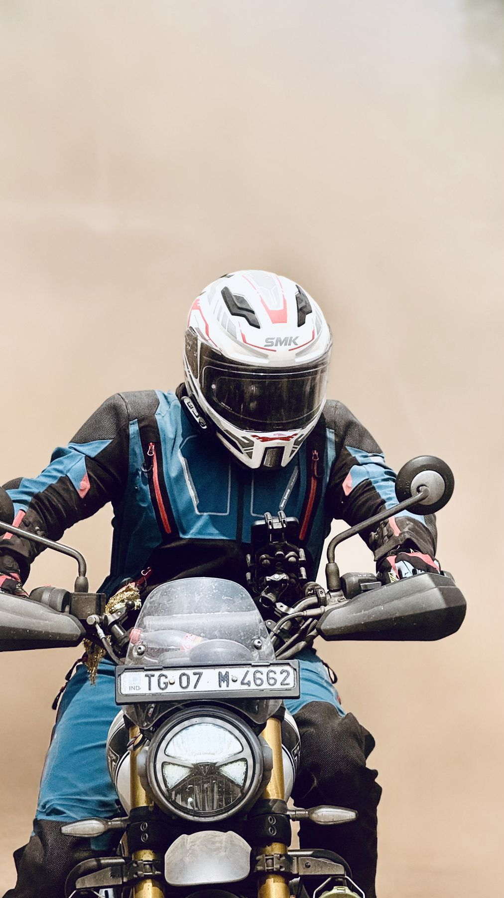
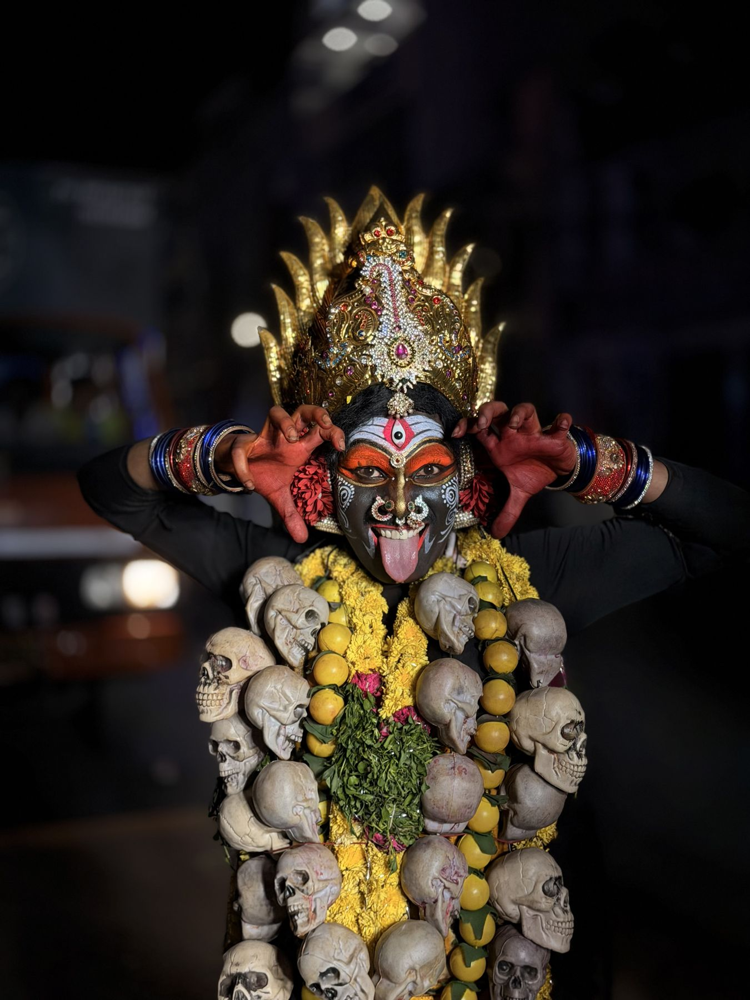
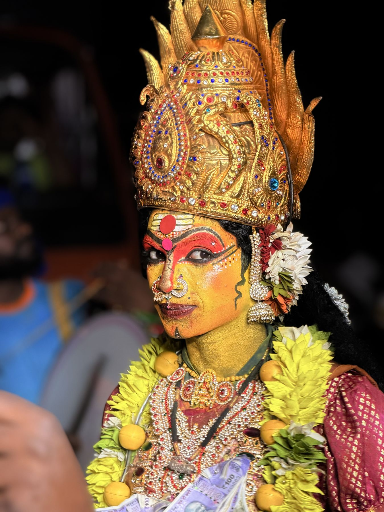
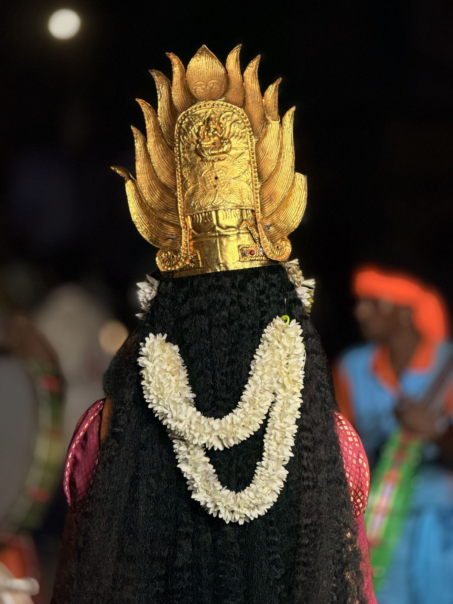
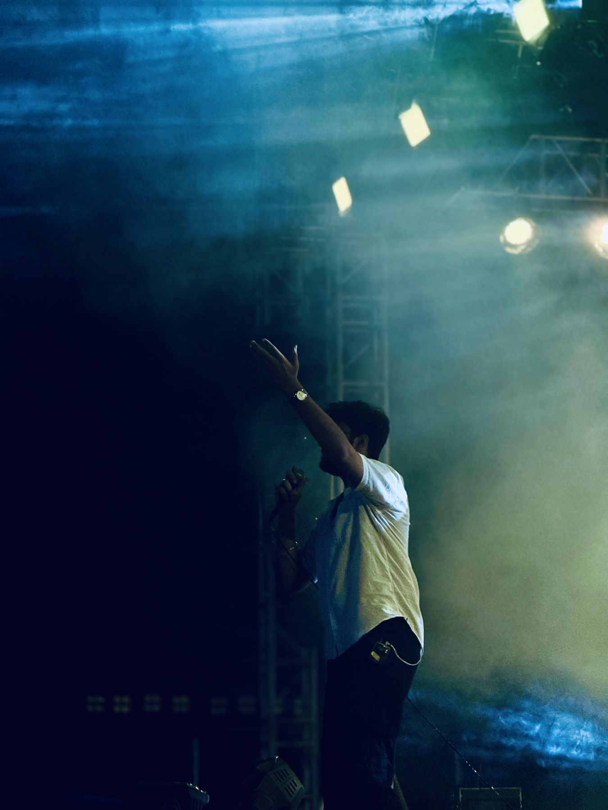
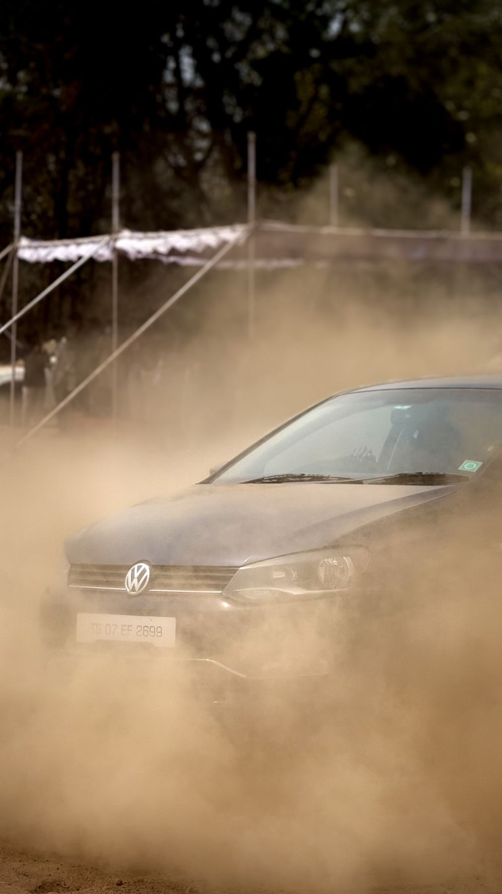
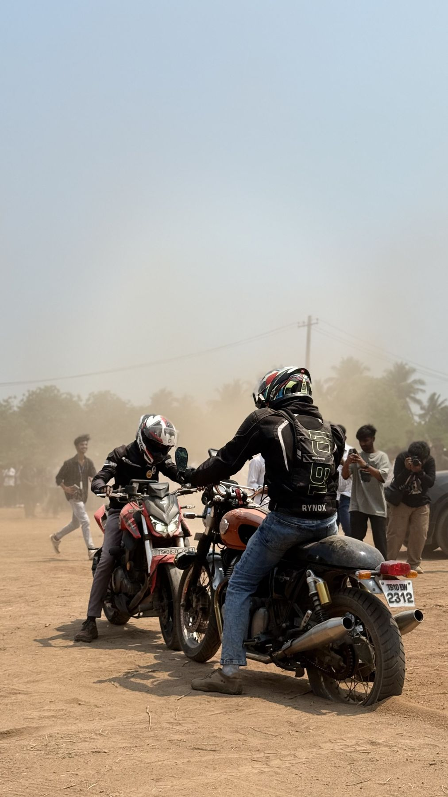
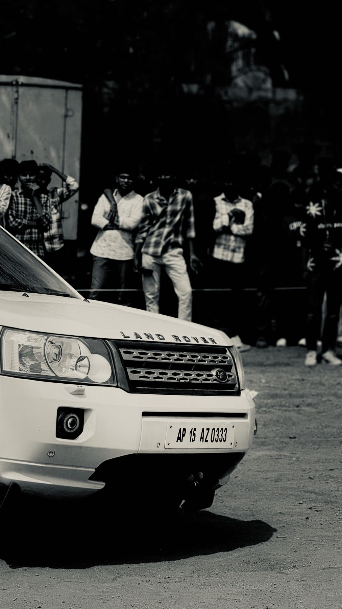
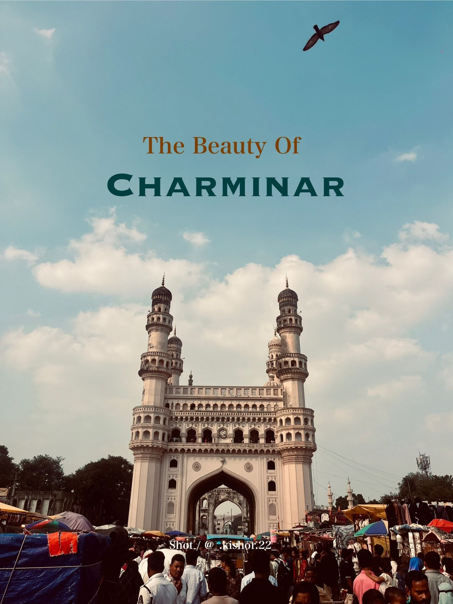

Event coverage
College fests, launches, cultural nights and private events — stage, crowd and candid moments.
Edited stills · highlight reelEvent · Festival · Motorsport · ConcertPhotographer / VideographerReels & short-form creator
The moments that happen in difficult light — processions after midnight, engines in the dust, stages in smoke.
Kishore is a Hyderabad-based photographer and videographer covering events, cultural festivals, motorsport and live music. He delivers edited photo sets and vertical reels built for social — working fast and close to the action, in whatever light the night gives him.
Six kinds of work, one approach: real light, close to the moment, delivered ready to post.
College fests, launches, cultural nights and private events — stage, crowd and candid moments.
Edited stills · highlight reelProcessions, pandals and rituals documented with respect, at night and in crowds.
Portrait series · documentary setsTrack days, rides and meets shot long from the fence line; deliveries and car features.
Action stills · vertical editsArtists under real stage light — beams, haze and colour.
Live stills · artist contentVertical 9:16 edits cut to the beat, captioned for Instagram and Shorts.
Vertical reelsHeritage and city frames for venues, tourism and editorial use.
Location stillsSix projects, 2025 — 2026. Each one a single night, race day or walk, edited down to the frames that carry it.



A cross-section of the archive. Filter by subject, or open any frame full screen.
“You won't find a job in this field.”
“I don't want to!”
An event reel cut on that exchange — stage lights, fireworks and crowd moments, answered beat by beat.
At home in low and mixed light — stage rigs, street lamps, festival fire — and edits for a consistent, cinematic look across stills and video.

Four frames in seventy-four seconds, made from the edge of a festival procession at quarter past one in the morning.

Let's create something worth remembering.
Festivals, race days, stages and the Old City — filter by subject, open any frame full screen.
Select any frame to view full screen · ← → to move · Esc to close

Event reels cut for the phone screen — fast, vertical and built around a single idea.
“You won't find a job in this field.” “I don't want to!”
A 19-second vertical reel that answers a familiar doubt with the work itself: fireworks over a lighting rig, a stage dancer, a singer in a patched red jacket, the crowd laughing back.
Launch-day coverage of the Sakhi Bazaar season opening: the lamp lighting, guests arriving, stalls and the crowd that followed, cut as a 39-second vertical reel.
Inside Dhoolpet's Ganesh idol workshops in the days before the festival — artisans painting eyes, finishing idols many times their height.
Goddess performers, drums and a packed crowd on a Navratri night, with on-screen words landing on the beat.
Fire breathers and costumed performers moving through the procession, filmed at 60fps for slow, heavy movement.
The Durga idol at the Nava Shakti Seva Samithi pandal — opening in duotone, then cutting to full colour detail.
A Ganesh pandal night under purple stage light: the crew, the idol on its stage, beams and LED walls.

Six stories, each from a single night, race day or walk.
Four frames in seventy-four seconds, made from the edge of a festival procession at quarter past one in the morning.
A dirt-track meet told from the fence line: riders, drift runs and the dust they leave behind.
A day of performances at ACE Engineering College's celebration of arts and talent.
Singers working the stage under beams, haze and violet wash.
An afternoon at Charminar, looking up.
Ganesh Chaturthi, seen twice: a pandal lit like a stage, and an idol still waiting in the workshop.
Four frames in seventy-four seconds, made from the edge of a festival procession at quarter past one in the morning.
Late at night, performers dressed as the goddess move through the crowd — crowns of beaten gold, faces painted in turmeric, vermilion and black.
Long lens, tight crops, nothing in the background but night. Three of the four frames sit between 100 and 125mm: close enough to fill the frame with a face, far enough to stay out of the performers' way. The last switches wide for the full figure.
A dirt-track meet told from the fence line: riders, drift runs and the dust they leave behind.
Riders in full gear and cars sliding on loose earth, with a crowd pressed along the barrier. Ninety minutes of runs, start to finish.
Most frames at 120mm or longer from trackside. The long lens flattens the dust into a warm backdrop so each rider reads cleanly; the final runs are graded to monochrome, reducing the cars to shape and texture.



A day of performances at ACE Engineering College's celebration of arts and talent.
Kalotsav — dance, theatre and a full auditorium at ACE Engineering College, Hyderabad.
Stage light is hard and uneven, so exposure is held from ISO 40 to 320. Performers are isolated at 80mm against the dark; the room itself at 48mm to show the scale of the crowd.

Singers working the stage under beams, haze and violet wash.
Two live nights: a band on a smoke-filled stage under twin spotlights, and a concert washed in violet and teal haze.
Timing over everything — waiting for the beam to land, using haze for depth and backlight for shape. Shot from the floor at up to 120mm.
An afternoon at Charminar, looking up.
Charminar, the sixteenth-century monument at the heart of Hyderabad's Old City, photographed from the street around it.
Low angles at 26–52mm turn the minarets into strong verticals against a soft sky, before a clean frontal view closes the set.

Ganesh Chaturthi, seen twice: a pandal lit like a stage, and an idol still waiting in the workshop.
A peacock-throne pandal on festival night in August 2025, and a workshop full of idols before the festival in September 2026.
At the pandal, 77mm isolates the idol against the illuminated throne. In the workshop, wide and close, keeping the crowd of other idols around it.
Kishore is a photographer and videographer based in Hyderabad. He is drawn to the hardest light in the city — processions after midnight, dust at noon, haze under a lighting rig — and to the people at the centre of it.
His work spans cultural festivals, motorsport, college and live-music events, and the architecture of the Old City, alongside vertical event reels for Instagram. He is open to full-time roles, freelance assignments and brand collaborations.
College fests, launches, cultural nights and private events — stage, crowd and candid moments.
Edited stills · highlight reelProcessions, pandals and rituals documented with respect, at night and in crowds.
Portrait series · documentary setsTrack days, rides and meets shot long from the fence line; deliveries and car features.
Action stills · vertical editsArtists under real stage light — beams, haze and colour.
Live stills · artist contentVertical 9:16 edits cut to the beat, captioned for Instagram and Shorts.
Vertical reelsHeritage and city frames for venues, tourism and editorial use.
Location stillsComfortable in low and mixed light — stage rigs, street lamps, festival fire — as well as harsh noon sun on a dust track.
Works mostly long, 77 – 154mm, to stay out of the moment; switches wide for rooms and architecture.
Deep blacks, warm highlights, and monochrome where colour distracts.
Event, festival, motorsport and live-music coverage across Hyderabad, 2025 — 2026.
Request CVSelected events and shoots. Each links to the work.
Hiring for a role, booking an event, or planning a campaign? Tell Kishore what you need, where and when.
Swipe for next